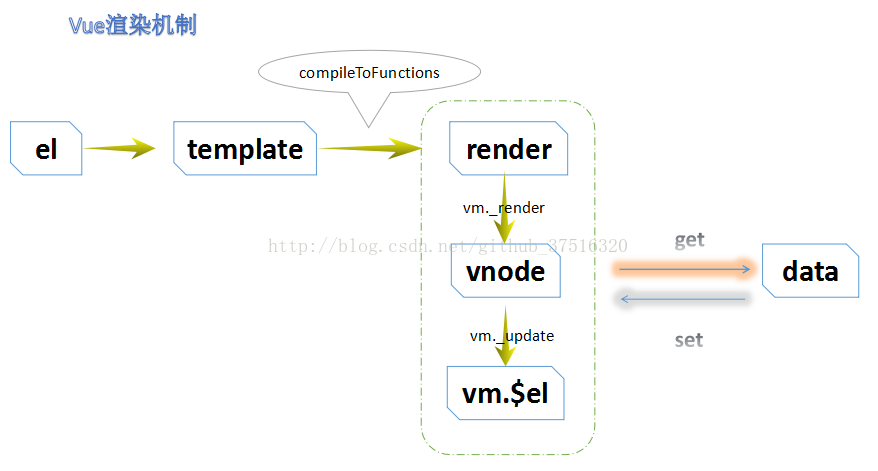
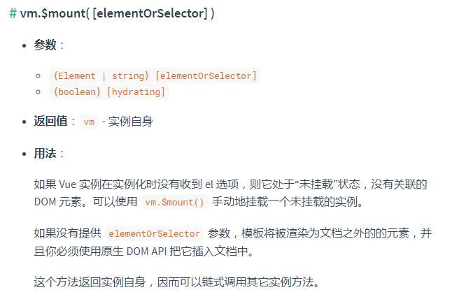
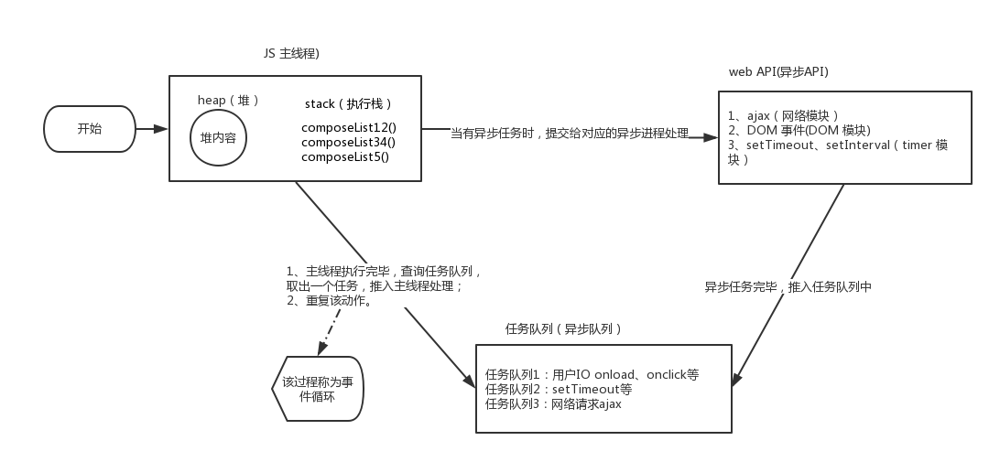

从开发一个vue组件深入理解vue的渲染机制
背景
近期在做一个前端推荐的组件，类似与各个APP打开时弹出的推荐效果，效果如下： 同时需要支持推荐多个，UED给出的效果图是类似轮播图的实现。 我需要将这个效果封装成一个独立的模块，提供给多个前端（和生活、营销）的多个位置使用（首页、营销活动页面。。）使用；
组件设计
在vue中，任何一个独立的UI模块都可以封装成（.vue）的组件；一般情况下，vue的组件都对应一个html自定义标签，在编译过程中，把组件模板替换到标签位置。但这种方式不适合当前的场景，推荐组件应该是一个全局组件，类似于alert的效果， 不需要设置html标签； 为了实现这种方式，需要先理解vue的组件是如何渲染的；
渲染机制
vue是将el或template字段传入的内容编译成渲染函数，渲染函数会把模板编译成虚拟DOM节点，同时每个渲染函数都对应一个观察者（watcher), watcher会监听每个数据的get和set操作，这样就实现了当数据修改时能同步渲染DOM树；

这里我们重点关注前半部分，也就是el转换为template，template生成渲染函数；
这部分的源码在src/platforms/web/entry-runtime-with-compiler.js中。
大致的实现是这样的： * 如果 template 选项不存在，那么使用 el 元素的 outerHTML 作为模板内容 * 如果 template 选项存在，且 template 的类型是字符串，有分两种情况： ** 如果第一个字符是 #，那么会把该字符串作为 css 选择符去选中对应的元素，并把该元素的 innerHTML 作为模板 ** 如果第一个字符不是 #，那么什么都不做，就用 template 自身的字符串值作为模板 * 如果 template 选项存在，且 template 的类型是元素节点(template.nodeType 存在)则使用该元素的 innerHTML 作为模板
我们项目中常用的单文件组件（.vue文件）会在打包时通过vue-loader直接编译成渲染函数；
这是通常我们组件的渲染流程，我们需要el作为挂载点把编译后的模板挂载在DOM树上；
如果要实现类似alert的效果，还不够！
$mount挂载函数
参考elementUI组件的设计，采用$mount函数实现异步挂载；

实际上在vue实例化的过程中，就是通过$mount函数进行模板编译的，我们前面讨论的渲染过程就是在完整版vue的$mount函数中进行的；
同时，$mount也是vue的实例方法，可通过vue的实例调用；
回到组件的设计： 1、组件本身是独立的vue实例，一个通过extend创建的Vue的‘子类’；
import Vue from 'vue';
import Main from './main.vue';
const RecommondConstructor = Vue.extend(Main);2、和创建普通vue实例一样,通过new的方式创建实例；
instance = new RecommondConstructor({
data: { list: options },
});3、创建实例后，调用$mount挂载函数，创建实例的选项中不设置el，根据$mount官方说明，模板将被渲染为文档之外的的元素；
instance.vm = instance.$mount();4、在实例挂载之后，元素可以用 vm.$el 访问。再通过原生的DOM API添加到body中；
document.body.appendChild(instance.vm.$el);5、最后通过插件的方式，把上面组件的实例化方法挂在vue的实例上；
import recommond from './main';
const install = function install(Vue, opts = {}) {
Vue.component('recommondImage', recommond);
Vue.prototype.$recommond = {
show: recommond,
};
};这样通过，调用this.recommond.show()方法，就会显示推荐组件；
DOM操作
前面提到了，推荐组件需要支持轮播效果，需要借助swiper来实现；
swiper是直接通过操作DOM来实现效果的，因此需要在组件完全渲染到DOM树上之后再进行swiper的实例化；
这里有一个问题，在组件的mounted生命周期里是否完成DOM的加载？
一般来说，mounted生命周期中是可以操作DOM树的，但是在我们设计的推荐组件中，是不可以的！
在这个例子中，组件在调用$mount时，没有传入el，因此模板将被渲染为文档之外的的元素；也就是说DOM文档树上还没有组件的节点；
我们是通过DOM API异步加载在DOM树上的；
因此mounted生命周期中直接操作DOM是不可行的；
nextTick函数
将回调延迟到下次 DOM 更新循环之后执行。在修改数据之后立即使用它，然后等待 DOM 更新。
先来看下nextTick的实现原理；
事件循环
下图是js的事件循环机制： 
任务队列
javascript中任务队列分为两类：microtask和（marco）task * microtask queue：唯一，整个事件循环当中，仅存在一个；执行为同步，同一个事件循环中的microtask会按队列顺序，串行执行完毕； * macrotask queue：不唯一，存在一定的优先级（用户I/O部分优先级更高）；异步执行，同一事件循环中，只执行一个。
更完整的事件循环
- 每个任务循环，先执行主线程的任务->执行microtask队列中所有的任务->从marcotask中取一个任务； 之后重复上述循环，而在microtask和marcotask之间会进行DOM树渲染，如果能在mircotask中更新完全部数据，那么只需要渲染一次就变更成最新的DOM了；
- 属于microtask的任务：ES6的promise，MutationObserver，process.nextTick
- 属于marcotask的任务：setTimeout，setInterval，setImmediate，MessageChannel，I/O，UIrending
nextTick实现
vue的$nextTick就是根据事件循环机制来实现的： 1. 浏览器支持Promise优先使用Promise 2. 其次选择setImmediate，缺点是，setImmediate只有部分高级IE浏览器支持的方法 3. 再次采用MessageChannel，不需要做超时检测 4. 最终选择setTimeout，最后才采用setTimeout的方式，是因为setTimeout将回调注册为task之前要不停的进行超时检测，有一定的性能损耗；
回到组件开发上，只需要在nextTick方法中进行swpier的初始化就可以了
mounted () {
this.$nextTick(function() {
if(this.isImgNull()) {
const mySwiper1 = new Swiper('#js_swiper2', {
centeredSlides: true,
loop: true,
slidesPerView: 'auto',
autoplay: {
delay: 2000
},
pagination: {
el: '.swiper-pagination'
}
});
this.visible = true;
}
})
},总结
结合推荐组件的开发，梳理清楚了VUE的渲染机制，以及nextTick的底层实现；在以后开发设计中可以写出更有效率的代码；